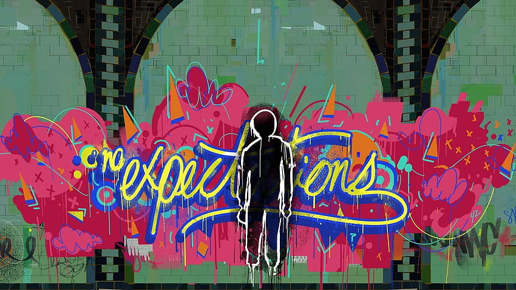

Correcto ¡Bien Hecho!, las galletas de la fortuna son originarias de Estados Unidos, precisamente por un Japonés en la ciudad de San Francisco. Gracias a que respondiste correctamente, Pere rechazará la oferta y seguirá las expectativas de su padre.  Imagen: Figura de un grafiti de "Expectativas" ㅤㅤㅤㅤContinuarㅤㅤㅤㅤ